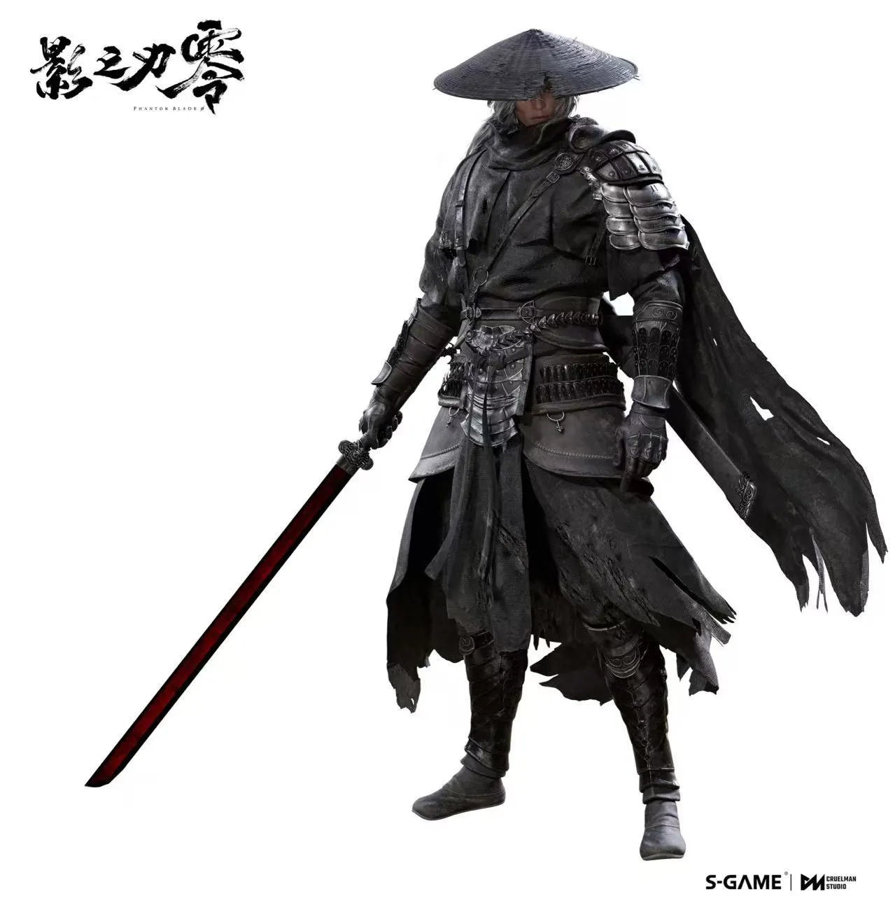
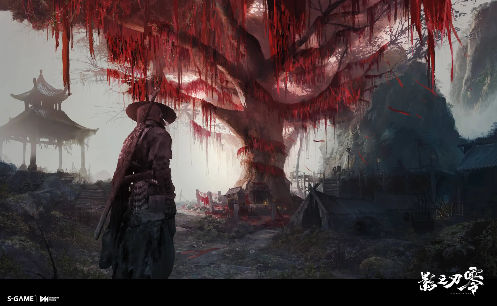
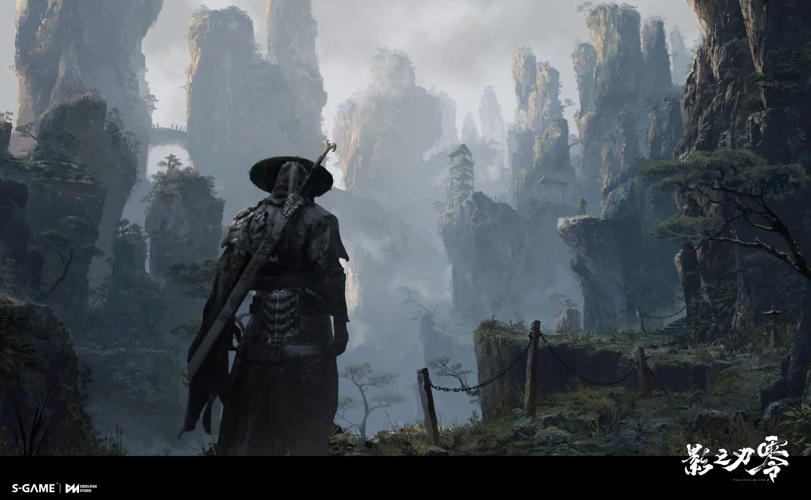
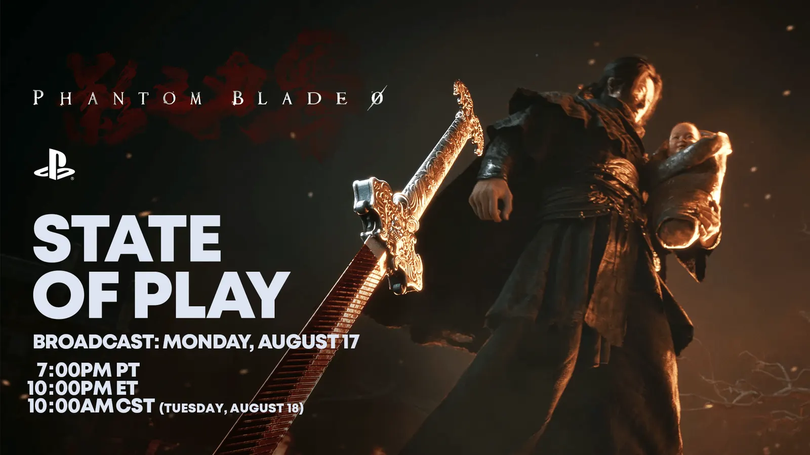

官方人物概念原画SOUL / 组织精锐刺客
魂
剑仍在手。
前路，尚未可知。
从执行者到被追杀者，他的故事始于一场构陷。残存的生命，让每一次拔剑都有了另一层重量。

A WORLD BETWEEN SHADOWS
刀剑之下是恩仇。
机关之中是人心。
在「影境」，中国武学与精密机械、神秘异术共存。看似熟悉的江湖，在工业遗迹与诡秘力量的映照下，显出另一副面孔。
功夫朋克 / KUNGFUPUNK
阅读开发者的世界观介绍 ↗
魂被构陷为杀害「组织」首领的凶手，在追捕中身负重伤。神秘医师的救治，为他换来六十六日的生命。
POWERS OF THE PHANTOM WORLD
旧主、血脉、剑阵与秘闻。选择一条线索，翻开它在影境中的卷宗。
配图取自官方美术与实机，用于呈现影境氛围；图形为本站导览设计。
THE ORDER
神秘而强大的刺客集团，也是魂原本效力的旧主。首领遇害后，魂被指为凶手；他必须在生命耗尽之前，查清构陷背后的真相。
FACES BEHIND THE BLADES

官方人物概念原画SOUL / 组织精锐刺客
剑仍在手。
前路，尚未可知。
从执行者到被追杀者，他的故事始于一场构陷。残存的生命，让每一次拔剑都有了另一层重量。

PlayStation 官方宣传图MO YUAN / 暗魔天堡之主
公开预告中登场的魔堡之主。
他的往事，牵连着魂尚未解开的身世。
FRAGMENTS OF A HIDDEN STORY
BEFORE ZERO · THE SERIES ARCHIVE
《雨血》与《影之刃》的江湖，留下了更长的来路。
以下是系列既有设定，可帮助理解前史；它们在《零》中的具体登场与承接，以本作公开资料为准。
玩家整理的系列前史，作为延伸阅读。